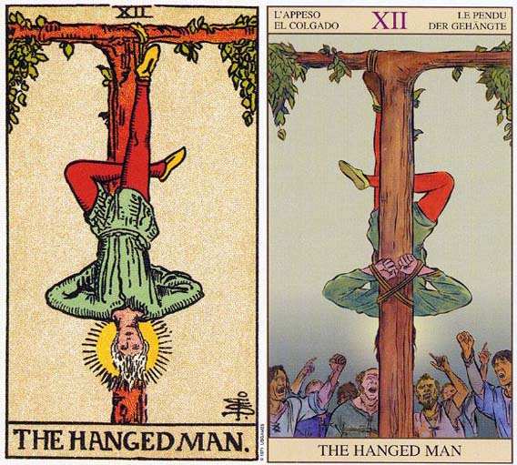

塔罗牌倒吊人（The Hanged Man）解释
相关语：牺牲 对应星象：双鱼座
倒吊人 HANGED MAN 代表顺从环境，静静得等待命运的安排，也可以代表一段反省的时光。逆位的代表受到约束却拼命想得到自由，可惜时机未到，仍需忍耐。
“以将有更美好的事物降临于你身上的信念，顺从于人生”是倒吊人这张牌所传达的讯息。
牌上这个人被绑了起来，不过倒颇沉着、顺从而坚忍。他双手被置于背后，头的周围有一圈清晰可见的光环（或力场）。红色象征持久力，黄色是智力上的理解，而蓝色则代表清晰的思绪及平静的外表。
脚上有一双黄色的拖鞋，是暗示经由脚来传导精神能量，而不是经有冠状气轮。他知道不论采取什么姿势，这股力量都可以接近他。在你洞察人生所代表的真义之后，你已经能够平静的接收自己，以及你在人生中所处的位置。
此人虽然被绑起来，然而这似乎并不令他困扰。他可以利用这段时间来反省他截止此刻的世界的确很奇怪。上下颠倒之后，他可以重新去看这个世界。试试倒立或把自己倒吊起来（请注意安全），然后从这个角度看看周围那些你平常视而不见，或视为理所当然的事物。或许你会为自己所看到的感到惊讶。
倒吊人明白，挣扎是丝毫没有用处的，而且事实上只会让他在重获自由之前，把自己弄得筋疲力尽。目前他利用能量的最好方式就是省思，因为只要他顺势而为，极可能更深刻地了解他是谁，以及他应该怎么做。颠倒过来观察世界，他可以看出过去生活中某些毫无意义的事物，而且这些事物目前仍充斥于他周遭的生活中。
这是一张唤起你的精神目的的牌，它代表你准备放弃你所拥有的东西，如此才能够去座你这辈子真正应该去做的事。
倒吊人（The Hanged Man）牌面解释
这张牌象征自我牺牲，牌面描绘的是一个双手反绑，被倒吊起来的勇士，他头上已经出现了隐约的天使光环。尽管旁人认为这无比痛苦，他却一脸的安详，因为他知道自己是为别人而牺牲， 即使他的肉体毁灭了，但他的精神将永存。
这张牌告诉我们，再糟糕的境遇也不过是对我们的一种磨练，厄运总会过去。正如传说中的凤凰涅磐，又如北欧神话中的奥丁献身于绞架才学会魔法、文字、咒语以及诗歌。忍耐眼前的厄运，接受命运的安排，好好反省过去的得失，为将来的再度崛起储备力量，才是最重要的。
倒吊人（The Hanged Man）正位解释
接受考验、行动受限、牺牲、不畏艰辛、不受利诱、有失必有得、吸取经验教训、浴火重生、广泛学习、奉献的爱
当牌面正立时，你的事业会有短暂的停顿，但你很清楚其中的原因，再次确认自己的目标，做好出发的准备。感情上同样需要反省的时间，你对爱情的牺牲对会给对方很大的触动，也会成为你们关系发展的催化剂。
倒吊人（The Hanged Man）逆位解释
无谓的牺牲、骨折、厄运、不够努力、处于劣势、任性、利己主义者、缺乏耐心、受惩罚、逃避爱情、没有结果的恋情
当牌面倒立时，事业上缺乏远见，迷失了努力的目标。感情上你没有了为对方付出的念头，而对方对你的态度依旧，这使你更想逃避。你已经忽略了内心深处正确的判断力，这让你开始遇到很多失败。
大体上的意义
倒吊人是一张代表投降的牌。它暗示，当你在这段期间内，透过对生命的顺从，并让它引领你到你需要去的地方，那么你便可以获益良多。
倒吊人还是一张代表独立的牌。这段期间内，你应该顺着感觉走，或是接受自己，即使别人都认为你的方式很奇怪也不打紧。它也可能象征，经历了生命中一段艰难的时光后的心灵平静。
现在不是挣扎的时候，静下来好好思考你过去的行为，以及未来的计划。这只是一个暂时的状态，只要你妥善的运用这段时间，对你应该是有好处的。让生命中的事物自然而然的发生，或许你会对结果感到惊喜。
带着“会有更美好的事情临降，来取代你所捐弃的事物”的信念，顺从于人生。花点时间来观察潜伏于事件底下的生命潮流。生命会给你一段宁静的时光，远离世界的纷纷扰扰，所以善用这段时光将是明智之举。
倒立的倒吊人
这张牌倒立可能暗示无法得到超越社会压力的自由。它代表你会听从别人对你的期望，而非顺从你内在的声音。或许你一生都在利用角色模式引导你，而非直接去体验生活。
它也可能意味你以某种方式在抗拒你内在的自我。或许你正抗拒着自己的某些部分，不愿顺从自己的精神目的，你可能还在为保持财产，或物质生活上的巅峰状态而奋斗不解。声明要求你去反省自己的方向，以及你现阶段精神的感情实现层次及情绪满足，然而你努力想要保持现状。
你受到拘束，却拼命想要的自由。可能你并不理解目前舒服的目的，或它能带给你什么，挣扎并不恰当，因为在适当的时间到来之前，你不可能得到自由。
如果你能妥善的运用这段时间的话，那么当生命要你迈步向前的时候，你就不必再花时间去思考了。如果你现在不进行反省的话，可能会导致更长的耽搁，或重复的模式。顺从自由其代价的。
两性关系上的意义
在两性关系分析当中，倒吊人代表一段反省的时光。或许你正从一个两性关系的日常生活中抽力出来，以反省你的精神方向，以及两性关系的方向。
内在的和平及宁静会伴随着这张牌而来，虽然你的伴侣可能会发现，很难在情感或社交上与此刻的你接近。这段时间你会把注意力集中在自己，而非伴侣身上。这可能是要求你周遭的人多谅解，及付出耐心了。
在阿伦到山上进行为期十天的冥想之前，他得牌面上出现了倒吊人这张牌。这项静坐打禅的课程，让他有很多的事件来反省自己、人生，以及亲密关系。